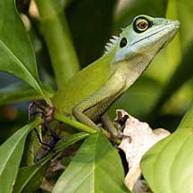
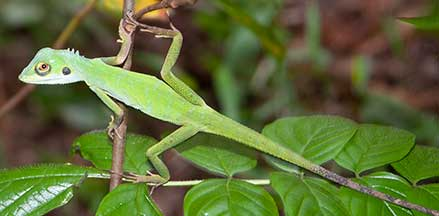

|
|
| vertebrates text index | photo index |
| Phylum Chordata > Subphylum Vertebrata > Class Reptilia |
| Green
crested lizard Bronchocela cristatella Family Agamidae updated Dex 2020 Where seen? This large green lizard is very well camouflaged among the green vegetation where it may perch motionless. It is active during the day and is arboreal, found in bushes and trees usually in forested areas and inland wild places. Features: Total length to 57cm. A slender body with small, bumpy (keeled) scales. It has a spiny crest on the back of its neck and a very long tail. Generally a plain bright bluish green although it may change to dark brown or grey. It has a dark ring around the eyes, and dark brown patch on the ears and the tip of the tail. |
 Bukit Timah Nature Reserve, Oct 04 |
 Lower Peirce Trail, Oct 03 |
| What does it eat? It eats insects
such as beetles, flies and ants. Baby lizards: Mama lizard lays 1-4 large, spindle-shaped eggs which are buried in the soil. Status and threats: It is not listed among our threatened animals. But it is no longer as commonly seen as in the past. It has been displaced by the more aggressive Changeable lizard (Calotes versicolor). |
| Green crested lizards in Singapore |
On wildsingapore
flickr
|
|
Links
References
|